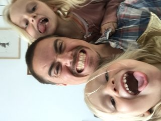

Hello, I’m Casper.
My home is Aarhus, Denmark.
My home is Aarhus, Denmark.
I've been searching all my life. Searching for the right job, the right education. And I've never found it! Until now. HTML and CSS it just makes sense to me. I know that I don't know that must HTML and CSS yet, but at my level it just seems so right. I honestly doesn't see the code, I just see the finished picture. It's like my mind is a WYSIWYG HTML-editor
I've never liked school, so it kind of ironic that I've, besides my regular school, have 4 educations to my name. Ohh... mabey I do like school, after all I'm in school again. This time at home wich is nice. I've worked as an electrician, solider, salesman, and a personal trainer.

I made my first wordpress website 10 years ago, hoping to make some money as an affiliate maketer. It didn't make me rich, as I hoped it would. But I did make alot of wordpress sites. Nothing fancy though. I didn't know anything about childthemes, php, css. I did try to build a few wesites in the Kompzer WYSIWYG edtor. But I didn't know enough CSS to ever make sites look great.
I'd like to open my own webdevelopment company or at least work as a freelance webdeveloper.
I get up every morning at 4 am and meditate for an hour. 2 or 3 times a week I head to the gym right after my meditation. On the weekends I usually work out later in the day.
One of my biggest hobbies is baking. Not cake, but bread. Jump to my hobbies page to some of my homebaked breads.
I allso enjoy playing with my three girls, (and their mother 'wink wink'), go to the movies, watching stand-up comedy, and just realxing at home.